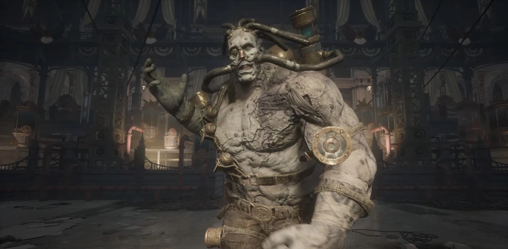
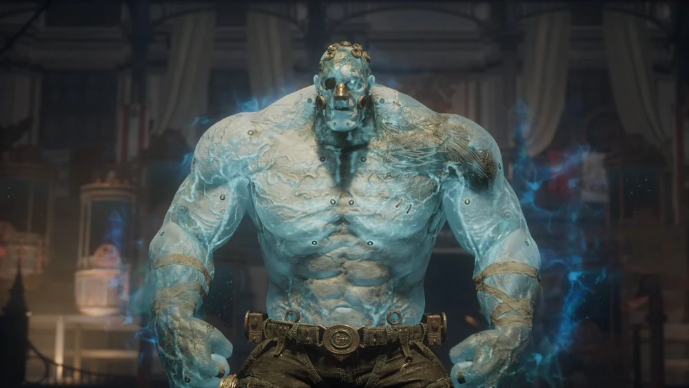

Champion Victor
The Reborn Strongman
Once a celebrated strongman in Krat, Victor succumbed to the Petrification Disease. He was resurrected by Simon Manus and the Alchemists as a flawless, monstrous culmination of their twisted Ergo experiments, fighting with raw, unadulterated physical power.
Combat Tips
Unlike most bosses, Victor relies entirely on martial arts and wrestling. In Phase 1, watch out for his charging tackles and delayed heavy punches. In Phase 2, he tears off his limiting restraints. His speed increases drastically, and he gains multi-hit frenzy combos and a devastating unblockable command grab. Dodge into his attacks rather than away, as his forward momentum will easily catch you if you roll backward.
Combat Stats
- Type: Carcass
- Weakness: Fire
- Resistance: Acid
- Location: Grand Exhibition Gallery
- Summon: Specter highly recommended for drawing aggro
- Drop: Reborn Champion's Ergo